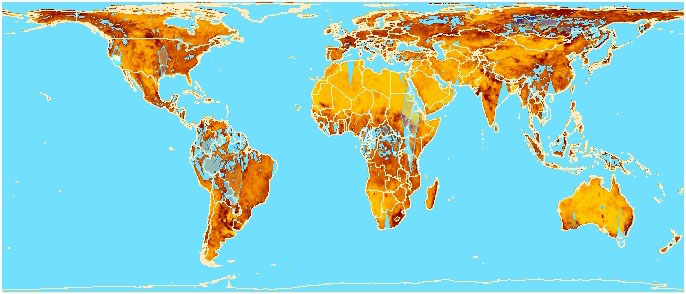
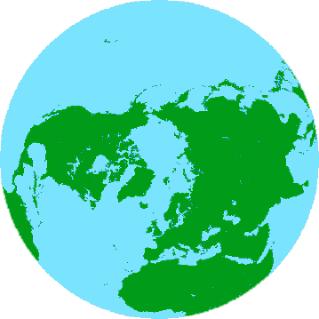
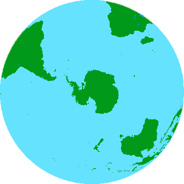
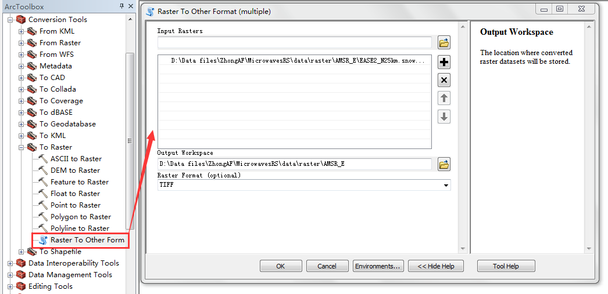
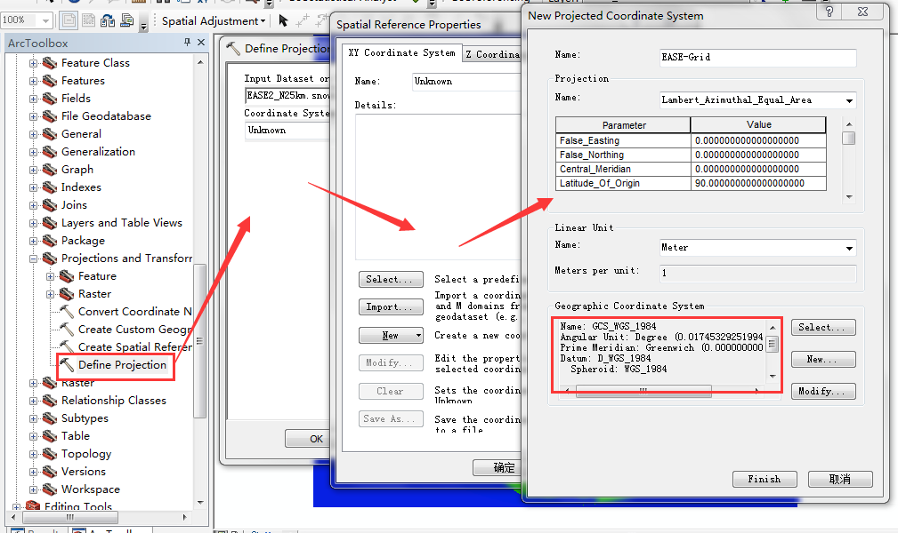
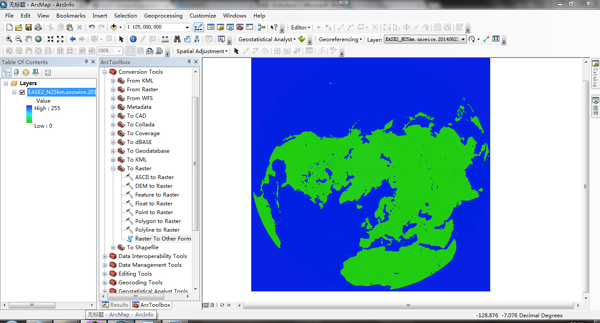

EASE-Grid是基于美国雪冰数据中心发展的数字地图和网格定义的理论发展而来的一种网格定义，而在常用GIS软件和遥感影像处理软件（如ArcGIS、ENVI等）中并无预设定义，因此使用起来很不方便。本文简要说明了EASE-Grid投影方式的定义，并主要介绍将EASE-Grid投影导入ArcGIS中，以及EASE-Grid投影数据在ArcGIS中的使用。
（一） EASE-Grid 投影介绍
EASE-Grid是基于美国雪冰数据中心发展的数字地图和网格定义的理论发展而来的一种网格定义，这种理论建立了一个软件程序库，假设网格数据集完全被定义为地图投影和网格点的覆盖晶格。EASE-Grid包含有3种投影，并有无限种可能的网格定义，以便于扩展应用。因此，EASE-Grid是一个通用工具，便于用户处理全球尺度的网格数据。
1. 全球圆柱等积投影定义
The North azimuthal equal-area map is defined by the following equations:
r = 2*R/C * sin(lambda) * sin(PI/4 - phi/2) + r0
s = 2*R/C * cos(lambda) * sin(PI/4 - phi/2) + s0
h = cos(PI/4 - phi/2)
k = sec(PI/4 - phi/2)

2. 北半球方位角等积投影定义
The South azimuthal equal-area map is defined by the following equations:
r = 2*R/C * sin(lambda) * cos(PI/4 - phi/2) + r0
s = -2*R/C * cos(lambda) * cos(PI/4 - phi/2) + s0
h = sin(PI/4 - phi/2)
k = csc(PI/4 - phi/2)

3. 南半球方位角等积投影定义
The South azimuthal equal-area map is defined by the following equations:
r = 2*R/C * sin(lambda) * cos(PI/4 - phi/2) + r0
s = -2*R/C * cos(lambda) * cos(PI/4 - phi/2) + s0
h = sin(PI/4 - phi/2)
k = csc(PI/4 - phi/2)

| Variable | Definition |
|---|---|
| r | Column coordinate |
| s | Row coordinate |
| h | Particular scale along meridians |
| k | Particular scale along parallels |
| lambda | Longitude in radians |
| phi | Latitude in radians |
| R | Radius of the Earth = 6371.228 km |
| C | Nominal cell size |
| r0 | Map origin column |
| s0 | Map origin row |
（二） EASE-Grid 投影导入ArcGIS中的方法
1. 更改数据文件名
可通过FTP方式下载Northern Hemisphere EASE-Grid 2.0 Weekly Snow Cover and Sea Ice Extent数据，文件类型为.bin。为了能将这些数据导入ArcGIS，需要将.bin文件重命名为.bsq（band-sequential）文件。
比如：EASE2_N25km.snowice.20140623-20140629.v04.bsq
2. 创建头文件（.hdr）
创建一个新文件，文件名与数据文件名相同（必须一致），后缀为.hdr，.bsq 数据与.hdr文件应在同一个文件夹，然后在文本编辑器中打开.hdr文件写入以下内容：
nrows 720
ncols 720
nbands 1
nbits 8
layout bsq
byteorder I
ulxmap -8987500
ulymap 8987500
xdim 25000
ydim 25000
比如：EASE2_N25km.snowice.20140623-20140629.v04.hdr
3. 将数据转为ArcGIS兼容的投影类型
打开ArcMap，在ArcToolbox中选择Conversion Tools --> To Raster --> Raster To Other Format (multiple)。在对话框中选择你的.bsq数据作为输入，选择TIFF作为输出栅格类型，点击OK。

4. 定义新的投影文件
false_easting: 0.000000
false_northing: 0.000000
central_meridian: 0.000000
latitude_of_origin: 90.000000
Linear Unit: Meter
Meters per unit: 1

至此，EASE-Grid投影导入ArcGIS完成，投影结果显示如下，然后可进行常用投影转换。

Fighting, GISer!
最新博文